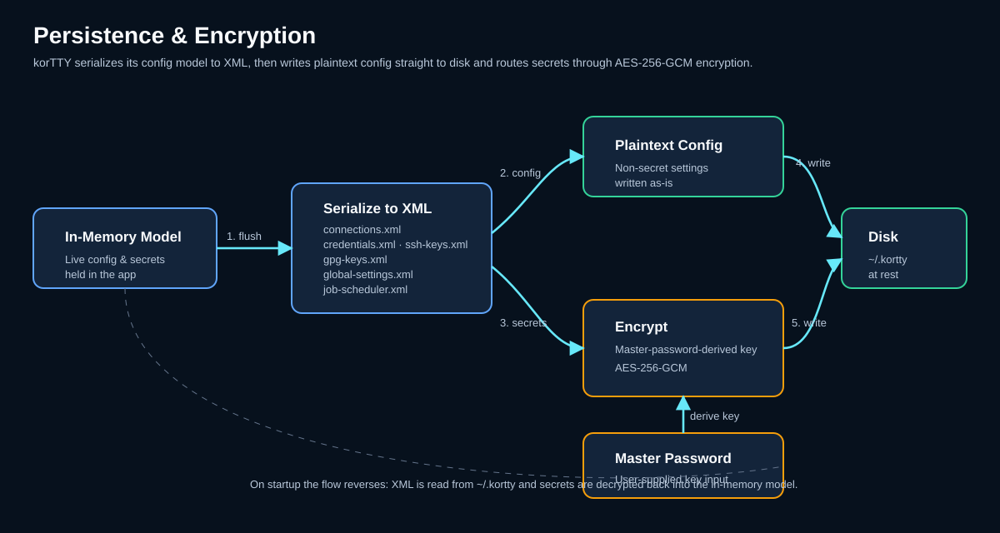

Sicherheit: Anmeldeinformationen, Schlüssel und Verschlüsselung¶
KorTTY schützt Ihre sensiblen Daten mit branchenüblicher Verschlüsselung und zentraler Schlüsselverwaltung. Alle Verbindungskennwörter, SSH-Schlüsselpassphrasen und die Speicherung von Anmeldeinformationen verwenden die AES-256-GCM-Verschlüsselung, die von einem Hauptkennwort abgeleitet wird, das beim ersten Start erstellt wird.

Master-Passwort¶
Beim ersten Start werden Sie aufgefordert, ein Master-Passwort (mindestens 6 Zeichen) zu erstellen, das alle gespeicherten Geheimnisse verschlüsselt.
Aufstellen¶
- Geben Sie ein Passwort ein (der Feldrand wird grün, wenn die Länge ausreichend ist, rot, wenn die Länge zu kurz ist).
- Ein Stärkeindikator zeigt die Passwortqualität an; Bei schwachen oder gebräuchlichen Passwörtern wird eine Warnung angezeigt, die Sie bei Bedarf jedoch bestätigen können.
- Bestätigen Sie das Passwort.
- Klicken Sie auf Setup.
At-Rest-Verschlüsselung¶
Das Master-Passwort selbst wird mit PBKDF2 gehasht (310.000 Iterationen) und niemals im Klartext gespeichert. Das Salz und der Hash werden in ~/.kortty/master-password-hash gespeichert.
Bei nachfolgenden Starts werden Sie von KorTTY aufgefordert, das Master-Passwort einzugeben, um verschlüsselte Daten zu entsperren. Sie können diese Eingabeaufforderung unter Einstellungen > Sicherheit deaktivieren, aber auf gespeicherte Passwörter kann erst dann zugegriffen werden, wenn Sie das Master-Passwort manuell eingeben.
Note
Wenn Sie das Master-Passwort verlieren, können verschlüsselte Daten nicht wiederhergestellt werden. Löschen Sie master-password-hash und credentials.xml, starten Sie neu, legen Sie ein neues Master-Passwort fest und geben Sie Ihre Passwörter erneut ein.
Verschlüsselungsmodell¶
Alle vertraulichen Daten im Ruhezustand werden mit AES-256-GCM verschlüsselt:
- Algorithmus: AES-256-GCM (Galois/Counter-Modus)
- Schlüsselableitung: PBKDF2WithHmacSHA256 mit 310.000 Iterationen
- IV-Länge: 12 Bytes (zufällig pro Verschlüsselung)
- Authentifizierungs-Tag: 128 Bit (integrierte Integritätsüberprüfung)
- Salt-Länge: 32 Bytes (zufällig pro Master-Passwort-Einrichtung)
Jeder verschlüsselte Wert kombiniert einen zufälligen IV mit dem Chiffretext, der zur Speicherung als Base64 codiert wird.
Anmeldeinformationsverwaltung¶
Speichern Sie zentralisierte Benutzernamen-/Passwort-Anmeldeinformationen, die über mehrere Verbindungen hinweg wiederverwendet werden können.
Öffnen des Managers¶
Menü: Verwaltung > Anmeldeinformationen verwalten
Anmeldeinformationen hinzufügen¶
- Klicken Sie auf Hinzufügen.
- Füllen Sie aus:
- Name – Beschreibende Kennung
- Benutzername – Login-Benutzername
- Passwort – Mit AES-256-GCM verschlüsselt gespeichert
- Umgebung – Produktion, Entwicklung, Test oder Staging
- Servermuster (optional) – Glob-Muster (z. B.
*.example.com,10.0.0.*) für den automatischen Abgleich von Anmeldeinformationen mit Verbindungen - Beschreibung (optional) – Freitextnotizen
- Klicken Sie auf OK.
Anmeldeinformationen in Verbindungen verwenden¶
Beim Erstellen oder Bearbeiten einer Verbindung:
- Gehen Sie zur Registerkarte Verbindung.
- Wählen Sie einen gespeicherten Berechtigungsnachweis aus der Dropdown-Liste Anmeldeinformationen aus.
- Benutzername und Passwort werden automatisch ausgefüllt.
Das folgende Diagramm zeigt, wie Anmeldeinformationen und SSH-Schlüssel vom verschlüsselten Speicher zu aktiven Verbindungen fließen:

Merkmale¶
- Umgebungsspezifisch – Anmeldeinformationen nach Bereitstellungsumgebung organisieren
- Server-Pattern-Matching – Anmeldeinformationen automatisch passenden Servern zuweisen
- Verschlüsselter Speicher – Passwörter werden mit AES-256-GCM verschlüsselt
- Automatische Nutzung – Wählen Sie Anmeldeinformationen direkt in den Verbindungseinstellungen aus
SSH-Schlüsselverwaltung¶
Zentralisierte Verwaltung privater SSH-Schlüssel mit verschlüsselten Passphrasen.
Öffnen des Managers¶
Menü: Verwaltung > SSH-Schlüssel verwalten
Schlüssel hinzufügen¶
- Klicken Sie auf Hinzufügen.
- Wählen Sie den Pfad zu Ihrer privaten SSH-Schlüsseldatei.
- (Optional) Geben Sie die Passphrase ein – sie wird verschlüsselt und gespeichert.
- Klicken Sie auf OK.
Hauptmerkmale¶
- Zentralisierte Verwaltung – Verwalten Sie alle SSH-Schlüssel an einem Ort
- Verschlüsselte Passphrasen – Schlüsselpassphrasen werden mit AES-256-GCM verschlüsselt gespeichert
- Kopieren von Schlüsseln – Verwenden Sie In Benutzerverzeichnis kopieren, um Schlüssel nach
~/.kortty/ssh-keys/zu kopieren (zur einfachen Migration in Backups enthalten) - Platzhaltersuche – Schnelle Suche nach Schlüsseln mithilfe von
*-Mustern - Automatische Nutzung – Wählen Sie Schlüssel direkt in den Verbindungseinstellungen aus
Verwendung von Schlüsseln in Verbindungen¶
Beim Erstellen oder Bearbeiten einer Verbindung:
- Gehen Sie zur Registerkarte Verbindung.
- Wählen Sie Privater Schlüssel als Authentifizierungsmethode.
- Wählen Sie den gewünschten Schlüssel aus der Dropdown-Liste SSH-Schlüssel aus.
- Der Schlüsselpfad und die Passphrase werden automatisch ausgefüllt.
GPG-Schlüsselverwaltung¶
Verwalten Sie GPG-Schlüssel für die Backup-Verschlüsselung und die Verbindungs-/Snippet-Exportverschlüsselung.
Öffnen des Managers¶
Menü: Verwaltung > GPG-Schlüssel verwalten
Schlüssel hinzufügen¶
- Manuelle Eingabe – Klicken Sie auf Hinzufügen, um die Schlüssel-ID und die E-Mail-Adresse manuell einzugeben.
- Systemimport – Klicken Sie auf Aus GPG importieren, um Schlüssel aus dem GPG-Schlüsselbund Ihres Systems zu importieren.
Bearbeiten und Entfernen von Schlüsseln¶
- Wählen Sie einen Schlüssel aus der Liste aus.
- Klicken Sie auf Bearbeiten, um Details zu ändern, oder auf Löschen, um sie zu entfernen.
Verwendung von Schlüsseln zur Sicherung¶
- Öffnen Sie Einstellungen > Backup.
- Wählen Sie GPG-Verschlüsselung als Verschlüsselungstyp.
- Wählen Sie den GPG-Schlüssel aus, der für die Verschlüsselung verwendet werden soll.
GPG-verschlüsselte Backups und Exporte werden als .gpg-Dateien gespeichert und erfordern den gpg-Befehl Ihres Systems und einen verwendbaren öffentlichen Schlüssel zur Entschlüsselung.
Gespeicherte Geheimnisse¶
Folgende Daten werden verschlüsselt in ~/.kortty/ gespeichert:
| Datei | Inhalt | Verschlüsselung |
|---|---|---|
credentials.xml |
Gespeicherte Benutzername/Passwort-Anmeldeinformationen | AES-256-GCM |
ssh-keys.xml |
SSH-Schlüsselpfade und verschlüsselte Passphrasen | AES-256-GCM |
connections.xml |
Verbindungskennwörter (inline) und Schlüsselpassphrasen (falls keine SSH-Schlüsselverwaltung verwendet wird) | AES-256-GCM |
job-scheduler.xml |
Scheduler-Sudo-Passwörter und Archiv-Passwörter; Tagebucheinträge redigieren von KorTTY verwaltete Geheimnisse | AES-256-GCM |
master-password-hash |
Master-Passwort-Hash (PBKDF2, 310.000 Iterationen) und Salt | Nur PBKDF2-Hash |
global-settings.xml |
AI-Profil-API-Schlüssel, Übersetzungs-API-Schlüssel | AES-256-GCM |
Best Practices für die Sicherheit¶
Warning
Ausgewählter Terminaltext, der an KI-Endpunkte gesendet wird, kann vertrauliche Informationen wie Anmeldeinformationen, Hostnamen, Dateipfade, Stack-Traces oder Betriebsdetails enthalten. Bevorzugen Sie für vertrauliche Daten einen vertrauenswürdigen lokalen Endpunkt wie LM Studio oder vergewissern Sie sich, dass Sie dem Remote-Endpunkt vertrauen, bevor Sie etwas senden.
Master-Passwort¶
- Verwenden Sie ein sicheres, eindeutiges Master-Passwort (mindestens 12 Zeichen, eine Mischung aus Groß-/Kleinbuchstaben, Zahlen und Symbolen).
- Geben Sie niemals Ihr Master-Passwort weiter.
- Bewahren Sie es sicher auf (Passwort-Manager empfohlen).
SSH-Schlüssel¶
- Schützen Sie private Schlüsseldateien mit einer Passphrase.
- Kopieren Sie Schlüssel nach
~/.kortty/ssh-keys/, um sie in verschlüsselte Backups aufzunehmen. - Beschränken Sie die Berechtigungen für Schlüsseldateien (z. B.
chmod 600).
JobScheduler¶
- Host-Schlüssel-Pinning: Host-Schlüssel werden standardmäßig für unbeaufsichtigte SSH-/SFTP-/Rsync-Jobs gepinnt, um Man-in-the-Middle-Angriffe zu verhindern.
- Sudo-Passwörter: Scheduler-Sudo-Passwörter werden verschlüsselt und in
~/.kortty/job-scheduler.xmlgespeichert. - Journal-Redaktion: Job-Journaleinträge redigieren von KorTTY verwaltete Geheimnisse vor der Persistenz (der redigierte Modus ist die Standardeinstellung; der vollständige Modus speichert nicht redigierte Ausgaben).
Backup-Verschlüsselung¶
- Verschlüsseln Sie Backups immer entweder mit passwortgeschützter ZIP- oder GPG-Verschlüsselung.
- Speichern Sie Sicherungsdateien an einem sicheren Ort.
- Testen Sie die Wiederherstellungsverfahren regelmäßig, um sicherzustellen, dass Backups verwendbar sind.
KI-Integration¶
- API-Schlüssel für KI-Endpunkte werden mit Ihrem Master-Passwort verschlüsselt.
- Die AI-Profilkonfiguration wird lokal gespeichert. Nur Ihre überprüfte Terminalauswahl oder Eingabeaufforderung wird an den Endpunkt gesendet.
- Der Internetzugang ist für AI-Profile standardmäßig deaktiviert. nur bei Bedarf aktivieren.
- Snippet-KI-Aktionen nutzen niemals den Internetzugang, selbst wenn dieser im Profil aktiviert ist.
Sicherheitsübersicht¶
| Funktion | Umsetzung |
|---|---|
| Master-Passwort-Hashing | PBKDF2 mit 310.000 Iterationen |
| Anmeldeinformationsverschlüsselung | AES-256-GCM |
| SSH-Schlüsselpassphrasen | Verschlüsselt mit AES-256-GCM und Master-Passwort |
| AI-API-Schlüssel | Verschlüsselt mit AES-256-GCM und Master-Passwort |
| Backup-Verschlüsselung | Passwortgeschützt ZIP oder GPG-verschlüsselt |
| JobScheduler-Geheimnisse | Sudo- und Archivkennwörter verschlüsselt; Journal-Schwärzung standardmäßig aktiviert |
| JobScheduler-Hostschlüssel | Für unbeaufsichtigte SSH-/SFTP-/Rsync-Jobs ist standardmäßig das Anheften des Host-Schlüssels erforderlich |
| Anmeldeinformationen | Nie im Klartext gespeichert |
Ändern des Master-Passworts¶
So ändern Sie Ihr Master-Passwort (wodurch alle gespeicherten Geheimnisse mit einer neuen Ableitung neu verschlüsselt werden):
- Öffnen Sie Einstellungen > Sicherheit.
- Klicken Sie auf Master-Passwort ändern.
- Geben Sie Ihr aktuelles (altes) Master-Passwort ein.
- Geben Sie das neue Master-Passwort zweimal ein.
- Alle gespeicherten Passwörter, Passphrasen und Anmeldeinformationen werden automatisch mit dem neuen Schlüssel neu verschlüsselt.
Referenz zu Konfigurationsdateien¶
Alle KorTTY-Daten werden unter ~/.kortty/ gespeichert. Wichtige sicherheitsrelevante Dateien:
~/.kortty/
├── master-password-hash # Master password hash and salt (PBKDF2)
├── credentials.xml # Encrypted credentials (AES-256-GCM)
├── ssh-keys.xml # SSH key paths and encrypted passphrases
├── gpg-keys.xml # GPG keys for backup/export encryption
├── connections.xml # Connection passwords and key passphrases
├── global-settings.xml # AI API keys and other encrypted settings
├── job-scheduler.xml # JobScheduler sudo/archive passwords (encrypted)
├── kortty.log # Application log
└── history/ # Compressed terminal session history